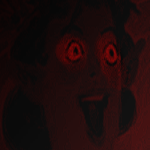

The Wolves of Arcohaem

Lukas Havran
Species: Human
Class: Conduit
Background: ?
Personality:
An arrogant and manipulative dude. He's extremely loyal due to his history in the Republic military.
Wants recognition from his family due to being an often overlooked child. He's composed and observant.
Backstory:
Raised as a Normon in a large family. He left to prove himself, joined the military, and witnessed his
entire battalion being massacred by the Wraith. The creature looked like a solid black humanoid shadow
with red eyes, horns, and claws. Lukas failed to defend himself, or anyone else there, but that moment
allowed him to flood and develop control over his ether. The creature used a Frigoshian dagger,
cementing his hatred for them. He later joined the Wolves of Arcohaem, and developed a close friendship
with everyone there, but especially with Iona, who reminds him of his brother Akarian Havran.
Theme:
- We Move Lightly - Dustin O'Halloran

Iona Kunetzova
Species: Human
Class: Conduit
Background: Criminal
Personality:
Iona is a naturally shy person. He doesn't mention things that are bothering him, he stays observant, and though
he takes thorough notes, he rarely checks them. He wants to fight in the war to ensure that everyone else will
have a choice in what they do -- unlike him. He doesn't know if that's enough to build a life around at this point.
Backstory:
Iona didn't choose most things in his life. He was raised as a petty thief until the war started. At 15, he was placed
under watch and told he'd be enlisted into the military when he turned 18. He was under the care of Kezlov, who became
like a parent to him. Kezlov named him, valued him, and got him into letter writing. When he was finally placed in
the military, he didn't enjoy it, but he went anyways. He turned out to be shockingly good at it due to his water-based
ether abilities. After a year, he was placed into the Wolves of Arcohaem, and quickly befriended Lukas Havran.
Theme:
- Jyn Erso & Hope Suite -- Michael Giacchino

Old Man Olaf
Species: Halfling
Class: Rogue
Background: Criminal
Personality:
Old Man Olaf is a compulsive thief, con artist, and spy. He steals from the rich whenever he can,
and then (unlike robin hood) he gives it to nobody. He is a generally friendly person, and is a master of
deception. He can manufacture pity from just about anyone due to his old age and stature. His appearance
makes him uniquely disarming, because no one suspects an elderly 2'4" man to be a master assassin.
Backstory:
Born in a southern Kessek temple and raised as a monk. He quickly abandoned their teachings when he
discovered some corruption. He was kicked out for stealing and for lying to people. So, with pretty much
nothing else in his life, he joined the Republic to steal and lie professionally. A few years later, he
was assigned to the Wolves of Arcohaem.
Theme:
- Schala's Theme - Yasunori Mitsuda

Ostos "Ron" Bjornson
Species: Storm Goliath
Class: Cleric
Background: Noble
Personality:
Quite possibly the most terrifying presence in all of Arcohaem. He is incredibly racist to Elves, he eats
whatever he can find, and has a unceasing hunger. He's loyal to the Republic and to the Wolves, and he
doesn't like hurting people, but he knows that sometimes the ends justify the means. Despite his appearance,
he's a very kind and helpful person.
Backstory:
Came from nobility in Hathor; his father Erik Bjornson is a senator. His younger brother Lief was involved
in a lumber accident and nearly severed his arm. In a panic, Ron flooded and healed his wounds. He found
purpose as a cleric, and went on to join the military to help those wounded in battle.
Theme:
- Father Kolbe's Praching - Wojciech Kilar

Tinkle Winkler I
Species: Human
Class: Paladin
Background: Soldier
Personality:
Tinkle Winkler, as you may have inferred from his name, is not an intelligent man. He believes he's a rich
noble, causing him to act incredibly arrogant and to give away his money. He's generous, loyal, and has a big
heart, but his brain isn't in the best condition as of late.
Backstory:
Tinkle Winkler wasn't born with that name. He joined the army about 7 years ago (we think). Unfortunately, he
was hit in the head by an anchor, leaving a large dent in his skull. He developed an odd array of disorders that
aren't diagnosed or understood. He misread the name of a tavern and began calling himself Tinkle Winkler. He then
joined the Wolves of Arcohaem.
Theme:
- You Need to Retire - Heitor Pereira

Darrel Honor's'swift
Species: Human
Class: Paladin
Background: Soldier
Overview:
Darrel is a great unknown. Little is known of his history or intentions. All that is known is that
he often times stays serious, and might be schizophrenic.
Theme:
- Swallow Falls - Mark Mothersbaugh